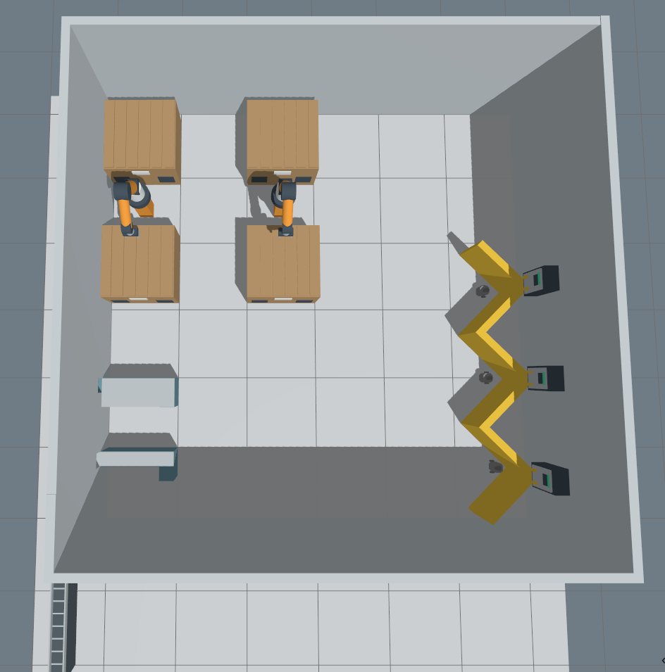

FEATURED CASE STUDY
01 / 02
물류센터 출고 지능화 AX (LOGITLE)
물류센터 출고 작업을 위한 다중 AMR·관제 시스템입니다. 저는 LiDAR 기반 도크 인식과 단계별 정밀 도킹 제어를 담당했습니다.
1.5 cm코드상 도킹 완료 기준
20 Hz제어 루프 설정
2D ICPV자 도크 정합
ROS 2 Action도킹 실행·취소
담당 역할
정밀 도킹 담당 · LiDAR 전처리, V자 모델 ICP 정합, PID·FSM 및 ROS 2 Action 구현
01
프로젝트 주제
AMR의 물류 이송과 정밀 정차를 연결하는 출고 자동화 시스템을 개발했습니다.
02
내가 한 일
LiDAR 점군을 V자 도크 모델에 정합하고, 상대 위치 오차를 선속도·각속도 명령으로 변환했습니다.
03
핵심 구현
경유지 접근·각도 정렬·감속 후진을 상태 머신으로 분리하고 정합 실패·취소 시 정지 처리를 넣었습니다.
VIDEO 01 · 전체 시스템 시연
 ▶ YouTube에서 전체 시연 재생
▶ YouTube에서 전체 시연 재생
YouTube VIDEO 01
iframe src에 embed 링크 입력VIDEO 02 · 영상 슬롯
YouTube VIDEO 02
https://www.youtube.com/embed/VIDEO_IDPHOTO 01 · 시뮬레이션

PHOTO 01
assets/파일명.jpg
IMPLEMENTATION & VALIDATION
02 / 02
SYSTEM DESIGN
내가 구현한 정밀 도킹 파이프라인
도크 인식부터 최종 후진까지 단계를 분리해 오차와 실패 원인을 추적할 수 있도록 구성했습니다.
01점군 전처리LiDAR · ROI
02도크 위치 추정V자 모델 · ICP
03단계별 접근PID · FSM
04최종 후진Odometry · Yaw 유지
A
LiDAR·ICP 위치 추정
전처리한 점군을 V자 도크 모델에 정합하고, 정합 품질과 위치 변화량으로 이상값을 걸러냈습니다.
B
PID·상태 머신 제어
경유지 접근 후 각도를 정렬해 감속 후진하고, 근거리에서는 Odometry 기반으로 진행 방향을 유지했습니다.
C
실패 처리·팀 시스템 연동
Action 실행·취소와 정합 실패 시 정지·재획득을 구현했습니다. 팀 FMS는 모의 데이터 기반이며 실기체 통합은 별도 검증 단계입니다.
구현 기준 · 실측 성과와 구분
코드상 완료 기준 1.5cm
제어 루프 설정 20Hz
실패 시 정지·재획득
VIDEO 03 · 영상 슬롯
YouTube VIDEO 03
https://www.youtube.com/embed/VIDEO_IDVIDEO 04 · 영상 슬롯
YouTube VIDEO 04
https://www.youtube.com/embed/VIDEO_IDPHOTO 02 · 이미지 슬롯
PHOTO 02
src="assets/파일명.jpg"